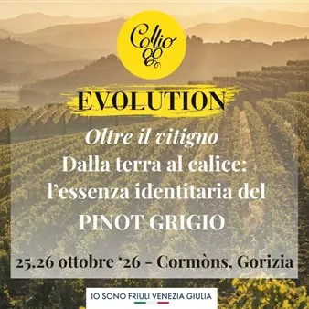

da dom 25 ott a lun 26 ott · dalle 11:00
Collio Evolution 2026: Oltre il vitigno. Dalla terra al calice: l’essenza identitaria del Pinot Grigio
Collio Evolution, l’evento istituzionale del Consorzio Tutela Vini Collio, presenta i numeri e il programma della seconda edizione. Dal 24 al 26 ottobre, tra Gorizia e Cormons, il territorio si racconta attraverso il Pinot Grigio, con il tema “Oltre il vitigno. Dalla terra al…
 Indicazioni
Indicazioni
- Costi e prenotazioni
- Costo non indicato · Prenotazione non indicata
- Programma
- Programma da verificare. Apri la fonte ufficiale per orari e possibili aggiornamenti.
- In caso di maltempo
- Nessuna indicazione specifica pubblicata.
- Note
- Acquisito automaticamente dalla fonte.
L’EVENTO
Descrizione completa
Collio Evolution , l’evento istituzionale del Consorzio Tutela Vini Collio, presenta i numeri e il programma della seconda edizione. Dal 24 al 26 ottobre, tra Gorizia e Cormons, il territorio si racconta attraverso il Pinot Grigio, con il tema “Oltre il vitigno. Dalla terra al calice: l’essenza identitaria del Pinot Grigio”.
Saranno 50 le aziende del Collio presenti ai banchi d’assaggio, con quasi 180 vini che raccontano l’intera Denominazione: dal Friulano alla Ribolla Gialla, dalla Malvasia al Sauvignon, fino al Collio Bianco e ai rossi del territorio. Il Pinot Grigio, protagonista dell’edizione, è al centro della degustazione tecnica riservata alla stampa, con circa 90 etichette tra diverse interpretazioni e annate. Sono attesi oltre 50 giornalisti italiani e internazionali, da Stati Uniti, Brasile, Polonia, Austria, Regno Unito, Canada e Paesi Bassi.
Il programma si apre sabato 24 ottobre a Gorizia, dove alle 16.00, all’UGG, Daniele Cernilli guiderà una masterclass che offrirà un primo viaggio nel Pinot Grigio del Collio attraverso lo sguardo di uno dei più autorevoli critici del vino italiano. In serata, alle 18.30, il Consorzio sarà ospite della Camera di Commercio Venezia Giulia nella Sala Verdi di Palazzo De Bassa per la presentazione della ricerca “Collio Experience – La parola all’Horeca”, realizzata da Nomisma Wine Monitor per il Consorzio, con la moderazione di Sebastiano Barisoni, vicedirettore esecutivo di Radio 24.
È la seconda parte del percorso iniziato nel 2025. La prima indagine aveva analizzato la percezione del brand Collio presso 1.500 consumatori italiani, posizionandolo tra i territori collinari più riconosciuti per i bianchi di qualità. Quest’anno la parola passa a ristorazione e hospitality, per capire come il canale Horeca conosce, sceglie e propone i vini del Collio.
Domenica 25 e lunedì 26 ottobre Collio Evolution si sposta a Cormons. La domenica mattina, all’Enoteca di Cormons, Cristina Mercuri, prima donna italiana Master of Wine, accompagnerà la stampa in una masterclass dedicata al Pinot Grigio del Collio e alla sua capacità di raccontare il territorio. Sempre all’Enoteca, nel corso delle due giornate, i giornalisti potranno approfondire il vitigno nella degustazione tecnica di Collio Pinot Grigio, attraverso le diverse interpretazioni aziendali.
Negli stessi giorni le Sale Civica e di Rappresentanza del Comune di Cormons accoglieranno il pubblico ai banchi d’assaggio delle aziende del Collio, aperti domenica dalle 11.00 alle 17.00 e lunedì dalle 11.00 alle 16.00: un’occasione per incontrare i produttori e scoprire, accanto al Pinot Grigio, la ricchezza e la varietà dei vini della Denominazione.
IL PROGRAMMA
Programma e orari
Appuntamenti raccolti dalle fonti elencate. Dove manca un orario, non è ancora disponibile in questa scheda.
Programma pubblicato
- Dal 2026-10-25 al 2026-10-26
INFORMAZIONI UTILI
Prima di partire
- Controllare la fonte prima di partire.
ORGANIZZAZIONE